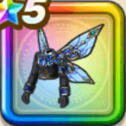

エルシィのジャケット
攻略班 9.0点 / イオ属性耐性+5%ドルマ属性耐性+5%イオ属性耐性+5％ドルマ属性耐性+5%【大神官】バギ属性ダメージ+4%HP100%以上のときスキルの体技ダメージ+2%バギ属性斬撃・体技ダメージ+8％
くわしい特徴
【レベル別習得スキル】 Lv1イオ属性耐性+5% Lv8ドルマ属性耐性+5% Lv10【ニンジャ】影縫いの発動率+1% Lv12【大神官】バギ属性ダメージ+4% Lv12HP100%以上のときスキルの体技ダメージ+2% Lv15バギ属性斬撃・体技ダメージ+8％ Lv18さいだいMP+5 Lv20イオ属性耐性+5％ Lv23すばやさ+6 Lv25ドルマ属性耐性+5% 【限界突破スキル】 1凸攻撃力+10 2凸すばやさ+12 3凸守備力+10 4凸さいだいHP+12